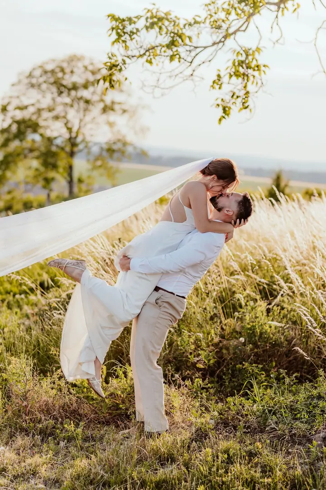
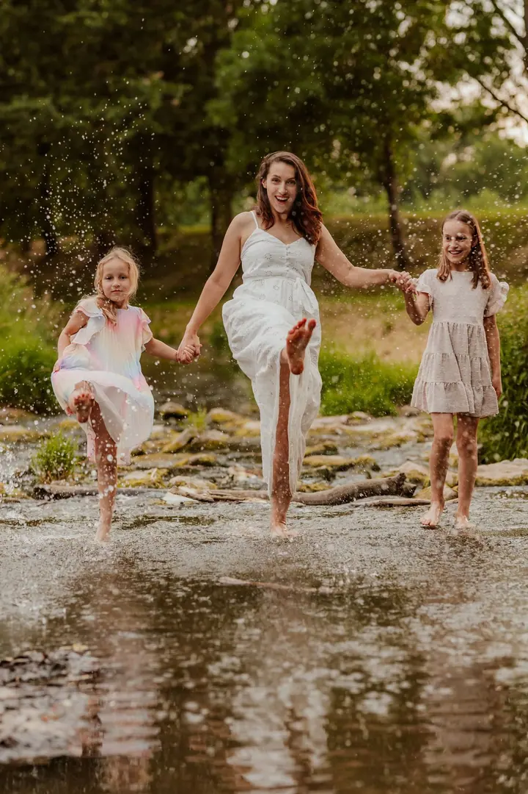
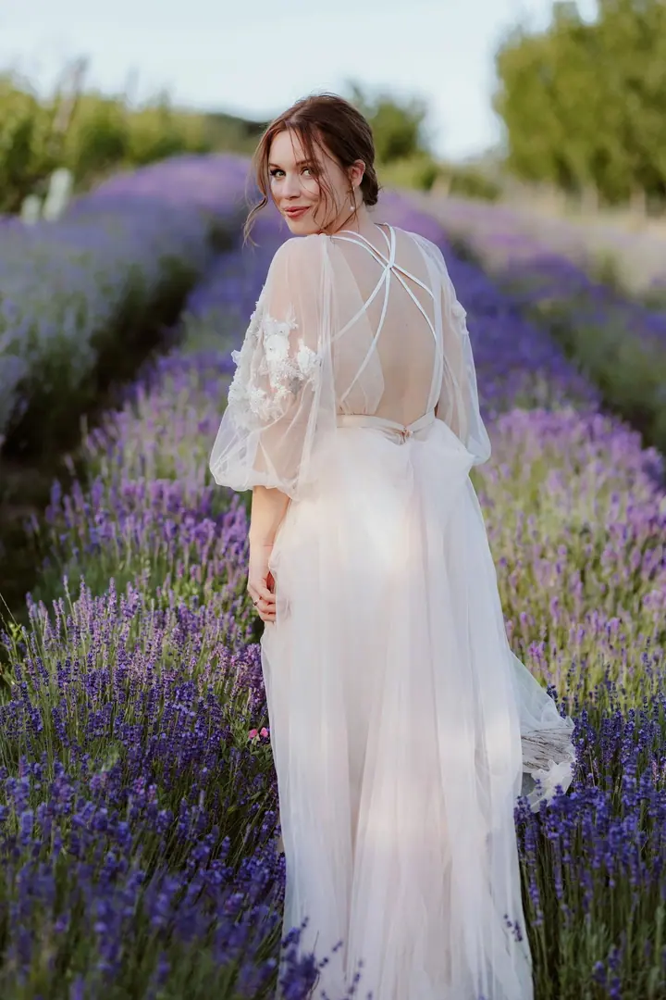
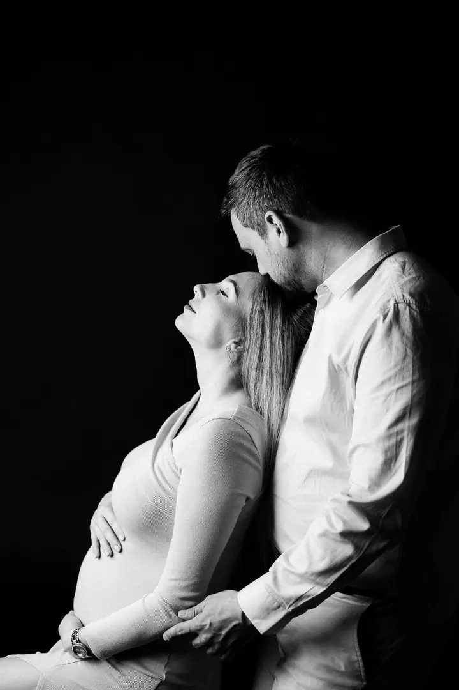

jedna
Svatby
Přirozené a emotivní fotky, které vyprávějí příběh vašeho dne, klidně nedokonalý, ale váš. Předsvatební focení je zdarma a párové focení zvládneme rychle, bez zdržování od zábavy.

Svatební a rodinná fotografka · Uherský Brod, Zlínský kraj, Jižní Morava

Jmenuji se Vendula Zitterbartová a jsem svatební, rodinná i portrétní fotografka z Uherského Brodu. Nejradši fotím v přírodě, kde naháním děti po lese a kde novomanželé rychle zapomenou na nervozitu. Chci vám dát víc než jen dobré fotky.
Více o mně
Co fotím
jedna
Přirozené a emotivní fotky, které vyprávějí příběh vašeho dne, klidně nedokonalý, ale váš. Předsvatební focení je zdarma a párové focení zvládneme rychle, bez zdržování od zábavy.
dvě
Děti nechám vyblbnout a co nejmíň je stylizuji, protože přirozené fotky jsou stejně nejkrásnější. Fotíme u vás doma, v ateliéru, ve městě nebo v přírodě, kterou mám nejradši.
tři
Z každé budoucí maminky září zvláštní energie a ráda ji zachytím venku i v ateliéru, klidně i s partnerem. Ráda vám půjčím šaty a páry jen lehce navedu, je to hlavně váš okamžik.
Přirozený i kreativní portrét pro ženy i muže, včetně boudoir, a brandové fotky na web a sítě. Na přání domluvím profesionální vizáž za zvýhodněnou cenu.
Nejradši fotím v přírodě, kde se na chvíli zastaví čas.

Za objektivem
Jeden člověk mi kdysi řekl, že když vezmu do ruky foťák, celá se rozzářím. Taky aby ne, dělám práci, která mě moc naplňuje. Fotografování je pro mě hlavně radost, vášeň a uchování vašich vzpomínek a emocí.
Sama mám dvě holčičky, takže dobře vím, že děti nemají na focení vždycky náladu. Dávám jim prostor, přistupuju k nim s respektem a co nejmíň je stylizuji. Fotit můžeme u vás doma, v ateliéru i ve městě, ale nejvíc energie čerpám z přírody.
Na svatbách jsem spíš klidnější, trpělivá a v důležitých chvílích neviditelná. Miluju, když si novomanželé před obřadem předají dopisy, když ženich poprvé spatří nevěstu nebo když přijde první tanec s rodiči. A přiznávám, sladký bar mě taky moc baví.
Vendula
Ozvěte se přes formulář nebo telefonem. U svatby mi prosím rovnou napište datum, místo a počet hostů.
Před svatbou se potkáme na předsvatebním focení, které je zdarma. Před rodinným focením vám pošlu PDF s tipy na oblečení a všechno spolu probereme.
Fotím nenápadně a přirozeně, a když nevíte, co dělat, ráda vás navedu. Párové focení na svatbě zvládneme klidně i za půl hodinky.
Dostanete náhledy, ze kterých si vyberete fotky k úpravě. Svatební fotky předávám v dárkovém balení na flashdisku i ke stažení pro hosty.
Portfolio
Otázky
Toho se u mě bát nemusíte. Focení můžeme pojmout jako reportáž, třeba u vody nebo v lese, a na začátku nebo na konci uděláme pár stylizovaných fotek pro babičky nebo do rámečku.
Skoro kdekoliv: u vás doma, v ateliéru (hlavně v chladných měsících), ve městě nebo v přírodě, která je moje nejoblíbenější prostředí. Dopravu ve Zlínském kraji mám v ceně.
Rodinné, těhotenské a párové focení začíná na 3 200 Kč za 10 upravených fotografií, dál nabízím balíčky s 15 a 30 fotkami. Focení v ateliéru je za příplatek 500 Kč za hodinu.
Ano, a moc ráda. Nejsem ale newborn fotografka, takže miminka nepolohuji ani nezavinuji. Vyfotím je u vás v náruči nebo i samotné, doma, v ateliéru nebo venku.
Nejsem moc zastánce společné fotky všech hostů a skupinek, hosty umím vyfotit v rámci reportáže. Pokud si to ale přejete, ráda vám vyhovím. Kompletní svatební ceník vám pošlu na vyžádání.